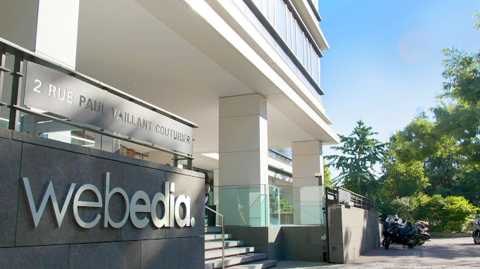
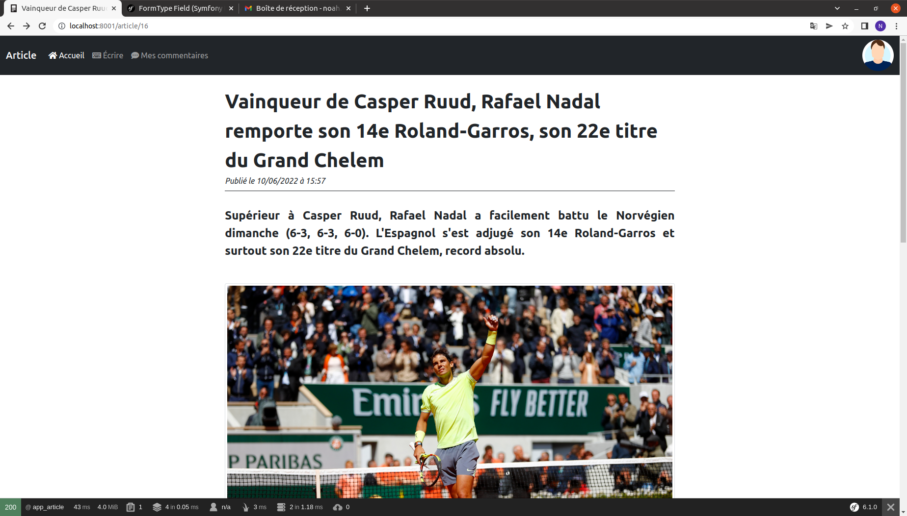
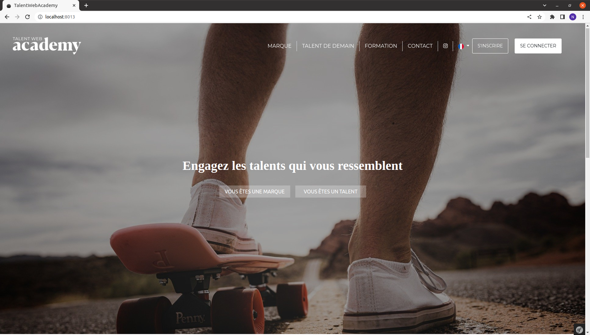

Description
Webedia est une entreprise française créée en 2007 par Cédric Siré,
suite aux lancements successifs des sites Purepeople (qui traite de l'actualité des célébrités),
Puretrend et Purefans, des sites internet créés dans des secteurs considérés comme « à fort potentiel d'intérêt et très peu traités en ligne ».
Avec environ 2400 employés et un capital social de 1 301 672,68 €,
Webedia est une entreprise très connue dans son domaine et particulièrement sur les réseaux sociaux,
grâce aux influenceurs les plus populaires d'internet.

Description
Le projet qui m'a été confié par mon maître de stage lors de la première partie de mon stage de première année consistait à découvrir le Framework Symfony.
Ce projet avait pour but de créer un site permettant aux utilisateurs de consulter des articles de sport,
de s'inscrire et de se connecter pour pouvoir créer leur propre contenu.
Pendant cinq semaines, mon maître de stage m'a assigné des tâches mineures pour le site telles que l'inscription, la connexion,
la création et l'affichage d'articles, etc.
Toutes ces tâches m'ont été communiquées via l'application Jira, qui permet la gestion de tâches et de projets.

Description
Ce deuxième projet, également confié par mon maître de stage durant la seconde partie de mon stage de première année,
avait pour objectif de refactoriser le site de Talent Web Academy appartenant à Webedia.
J'ai principalement travaillé sur la refactorisation du front-end du site à partir de maquettes fournies par l'entreprise.
Au cours de la première semaine, j'ai reçu plusieurs tâches via Jira.
Cependant, de nombreux problèmes sont survenus et mon maître de stage était absent.
J'ai donc priorisé les tâches ne comportant pas de bugs, en attendant son retour pour résoudre les problèmes ensemble.
Par la suite, j'ai effectué une mise à jour du projet Symfony de la version 4 à la version 6.